Plant Grimoire
Bark 39
- Acacia
 Alder
Alder- Ash
- Aspen
 Balché
Balché- Banyan
- Baobab
 Bayberry
Bayberry- Birch
- Bodhi
 Boldo
Boldo Borneo Camphor
Borneo Camphor Cade
Cade- Camphor
 Cascara Buckthorn
Cascara Buckthorn Cascarilla
Cascarilla Cassia
Cassia Chestnut
Chestnut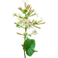
Cinchona- Cinnamon
 Dogwood
Dogwood False Winter's Bark
False Winter's Bark- Magnolia
- Neem
- Oak
- Prickly Ash
- Quassia
 Red Sandalwood
Red Sandalwood- Sassafras
- Slippery Elm
 Sweet Birch
Sweet Birch- Sycamore
- Walnut
 White Poplar
White Poplar- Willow
 Winter's Bark
Winter's Bark- Witch Hazel
- Yew
- Yohimbe
Bush 135
 Acanthus
Acanthus Amyris
Amyris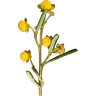
Antiseptic Bush- Barberry
- Bayberry
- Bittersweet Nightshade
- Blackberry
 Blackthorn
Blackthorn- Bleeding Heart
- Blueberry
- Boldo
- Boronia
 Briar
Briar- Broom
- Buchu
 Butcher's Broom
Butcher's Broom Cabbage Rose
Cabbage Rose- Cade
 Camellia
Camellia- Camel Weed
- Caper
- Cascara Buckthorn
- Cascarilla
 Cassie
Cassie Castor
Castor- Catnip
 Cat Tail
Cat Tail Cayenne Pepper
Cayenne Pepper- Chickweed
- Chili Pepper
- Cinquefoil
- Clary Sage
- Coca
- Coffee
- Cotton
 Cranberry
Cranberry- Curry
 Damiana
Damiana- Datura
- Deerstongue
- Devil's Shoestring
 Dock
Dock- Dogbane
 Dwarf Elder
Dwarf Elder Dwarf Pine
Dwarf Pine Euphorbia
Euphorbia Fern
Fern- Feverfew
 Forsythia
Forsythia Furze
Furze Gardenia
Gardenia- Geranium
- Goat's Rue
- Goldenseal
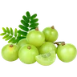
Gooseberry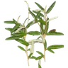
Grannybush- Green Tea
- Hawthorn
- Heather
- Hemp
- Henbane
- Henna
- Hibiscus
- Holly
- Holy Basil
- Honeysuckle
- Horsetail
- Huckleberry
- Hydrangea
- Hyssop
- Jaborandi
- Jasmine
- Jojoba
- Juniper
- Kava-Kava
- Knotweed
- Lady's Mantle
- Lavender
- Lemon Verbena
- Licorice
- Lilac
- Linaloe
- Maidenhair
- Male Fern
 Manuka
Manuka- Mayflower
- Mistletoe
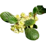
Mountain Mahogany- Mountain Pepper
- Mugwort
- Mulberry
- Mullein
- Musk
- Nettle
- Oleander
- Oregon Grape
- Papyrus
- Pepper
- Pineapple
- Poinsettia
- Poison Ivy
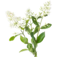
Privet- Ragweed
- Raspberry
- Rock Rose
- Rue
- Sagebrush
 San Pedro Cactus
San Pedro Cactus- Santolina
- Savine
- Savory
- Senna
- Snakeroot
 Spanish Broom
Spanish Broom- Spanish Oregano
- Spanish Sage
- Spike Lavender
 Storax
Storax- Strawberry
- Thistle
- Ti
- Tobacco
- Uva Ursa
- Valerian
- Venus' Flytrap
- Vervain
- Wahoo
- Wintergreen
- Winter Savory
- Witch Hazel
- Woodruff
- Wormwood
- Yerba Mate
- Yerba Santa
- Yucca
Carnivorous 1
Crop 29
Flower 427
- Acacia
- Acanthus
- Adam and Eve Roots
 Adder's Tongue
Adder's Tongue- Adonis Rose
- African Violet
- Agarwood
- Agrimony
- Alder
 Alkanet
Alkanet Almond
Almond Althea
Althea- Alyssum
- Amaranth
 Amaryllis
Amaryllis- Amla
 Anemone
Anemone Angelica
Angelica Apple
Apple- Apple Blossom
 Arbutus
Arbutus Arnica
Arnica Arum
Arum- Asafoetida
 Asphodel
Asphodel- Aster
- Avens
- Azalea
- Baby's Breath
- Balm of Gilead
- Balsam
- Banana
 Begonia
Begonia Belladonna
Belladonna Bells of Ireland
Bells of Ireland- Bergamot
- Betony
- Bistort
 Bitter Orange
Bitter Orange- Bittersweet Nightshade
- Black-eyed Susan
- Black Cohosh
- Blackthorn
- Bleeding Heart
- Blessed Thistle
 Bloodroot
Bloodroot Bluebell
Bluebell- Blueberry
- Blue Flag
 Bog Asphodel
Bog Asphodel Boneset
Boneset- Borage
- Boronia
- Briar
- Bromeliad
- Broom
 Buck Bean
Buck Bean- Buckwheat
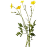
Buttercup Butterfly Weed
Butterfly Weed- Cabbage Rose
- Cactus
- Cajuput
- Calendula
 Calla Lily
Calla Lily Calycanthus
Calycanthus- Camellia
- Camphor
- Cananga
 Candytuft
Candytuft Canterbury Bells
Canterbury Bells- Caper
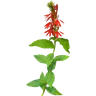
Cardinal Flower- Carnation
- Carob
- Cassie
- Catchfly
- Catnip
- Cat Tail
- Cattleya
- Celandine
 Celery
Celery Centaury
Centaury Cherry
Cherry Chervil
Chervil- Chestnut
- Chickweed
 Chicory
Chicory- Chrysanthemum
- Cinchona
- Cinquefoil
- Citronella
- Clary Sage
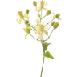
Clematis Cloth-of-Gold
Cloth-of-Gold- Clove
- Clover
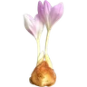
Colchicum Coltsfoot
Coltsfoot Columbine
Columbine- Comfrey
 Compass Plant
Compass Plant Corchorus
Corchorus- Coreopsis
 Cornflower
Cornflower Cornmint
Cornmint Coronilla
Coronilla Costmary
Costmary Cowslip
Cowslip Coxcomb
Coxcomb Creeping Cinquefoil
Creeping Cinquefoil- Cuckoo-Flower
 Cucumber
Cucumber Cyclamen
Cyclamen Daffodil
Daffodil Dahlia
Dahlia Daisy
Daisy- Damiana
- Dandelion
 Daphne
Daphne Date Palm
Date Palm- Datura
 Daylily
Daylily- Deerstongue
 Devil's Bit
Devil's Bit- Devil's Shoestring
 Dill
Dill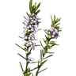
Diosma- Dittany of Crete
- Dock
- Dogbane
- Dog Rose
- Dogwood
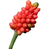
Dragon Root Dutchman's Breeches
Dutchman's Breeches- Dwarf Elder
 Echinacea
Echinacea Edelweiss
Edelweiss Elder
Elder Elecampane
Elecampane Elm
Elm- Enchanter's Nightshade
 Eremurus
Eremurus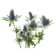
Eryngo Eucalyptus
Eucalyptus Eucharis Lily
Eucharis Lily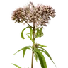
Eupatorium- Euphorbia
 Evening Primrose
Evening Primrose Eyebright
Eyebright Fairy Wand
Fairy Wand Fennel
Fennel- Feverfew
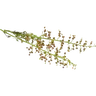
Figwort Flax
Flax- Fleabane
 Flora's Bell
Flora's Bell- Flowering Reed
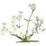
Flowering Spurge- Forget-Me-Not
- Forsythia
 Foxglove
Foxglove- Foxtail Grass
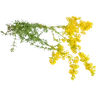
Fragrant Bedstraw- Fraxinella
- Freesia
- Fuchsia
 Fumitory
Fumitory- Furze
- Gardenia
 Gentian
Gentian- Geranium
- Gerbera
 German Chamomile
German Chamomile Giant Vetch
Giant Vetch- Gladiola
- Globe Amaranth
- Gloxinia
- Goat's Rue
 Goldenrod
Goldenrod- Goldenseal
- Goosefoot
- Grey Spider Flower
- Ground Ivy
- Groundsel
- Guelder Rose
- Harebell
- Hawthorn
- Heather
- Helichrysum
- Heliotrope
- Hellebore
- Hemlock
- Hemp
- Henbane
- Henna
- Hibiscus
- Hollyhock
- Holy Basil
- Honesty
- Honeyflower
- Honeysuckle
- Hops
- Horehound
- Horny Goat Weed
- Hound’s Tongue
- Houstonia
- Hyacinth
- Hydrangea
- Hyssop
- Indian Paint Brush
 Jack Bean
Jack Bean- Japonica
- Jasmine
- Jerusalem Oak
- Joe-Pye Weed
- Jonquil
- Kennedia
- Lady's Mantle
- Lady's Slipper Orchid
- Lantana
- Larkspur
- Laurustinus
- Lavender
 Leadwort
Leadwort- Lemon Balm
- Lettuce
- Life-Everlasting
- Lilac
- Lily
- Lily of the Valley
- Linden
- Liverwort
- Lobelia
- Locust
- Loosestrife
- Lotus
- Love-in-a-Mist
 Low John the Conqueror
Low John the Conqueror- Lupine
- Lychnis
- Macrocarpa
- Magnolia
- Maguey
- Mallow
- Mandrake
- Marigold
- Marjoram
- Marvel of Peru
- Masterwort
- May Apple
- Mayflower
- Mayweed
 Meadowfoam
Meadowfoam- Meadow Rue
- Meadowsweet
- Melilotus
- Mesquite
- Mignonette
 Milk Thistle
Milk Thistle- Milk Vetch
 Milkweed
Milkweed- Mimosa
- Mint
- Mistletoe
- Mock Orange
 Moonflower
Moonflower Moonwort
Moonwort- Morning Glory
 Moroccan Chamomile
Moroccan Chamomile- Mountain Mahogany
- Mouse-Ear Chickweed
- Mugwort
- Mullein
- Musk
- Myrrh
- Myrtle
- Narcissus
 Nasturtium
Nasturtium- Neroli
- Niaouli
 Okra
Okra- Oleander
- Orange
- Orchid
- Oregano
- Oregon Grape
- Orris
- Palmarosa
- Pansy
- Papaya
- Parosela
- Passion Flower
- Patchouli
- Paulownia
- Pennyroyal
- Peony
- Peppermint
- Periwinkle
- Petunia
- Phlox
- Pimpernel
 Pipsissewa
Pipsissewa- Plantain
- Plum
- Plumeria
- Poinsettia
- Poke
- Pomegranate
- Poplar
- Poppy
- Potato
- Primrose
- Purslane
- Quaking Grass
- Quassia
- Quince
- Radish
- Ragged-Robin
- Ragweed
- Ragwort
- Rampion
- Ranunculus
- Ravensara
- Reed
 Rhodiola
Rhodiola- Rhododendron
- Rock Rose
- Roman Chamomile
- Rose
- Rosehip
- Rose of Sharon
- Rue
- Saffron
- Sage
- Sagebrush
- Saint John's Wort
- Santolina
- Savory
- Scullcap
- Sensitive Plant
- Shallot
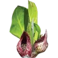
Skunk Cabbage Snake Head
Snake Head- Snakeroot
- Snapdragon
- Snowdrop
- Soapwort
- Solomon’s Seal
- Southernwood
- Spanish Broom
- Spanish Oregano
- Spanish Sage
- Spearmint
- Spider Flower
- Spider Lily
- Spiderwort
- Spike Lavender
- Spindle Tree
 Spurge
Spurge- Squill
- Star of Bethlehem
- Stephanotis
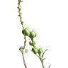
Stillingia- Stock
- Stonecrop
- Strawberry
- Sunflower
- Sweetgum
- Sweet Pea
- Sweet Sultan
 Sweet William
Sweet William- Tagetes
- Tahiti Vanilla
- Tamarisk
- Tangerine
- Tansy
- Tarragon
- Teasel
- Tea Tree
- Thistle
- Thrift
- Thyme
- Ti
- Toadflax
- Tobacco
- Tomato
- Trillium
- Tuberose
- Tulip
- Turnip
- Valerian
- Vanilla
- Venus' Flytrap
- Venus' Looking Glass
- Veronica Speedwell
- Vervain
- Violet
- Viscaria
- Wahoo
- Wallflower
- Water Hemlock
- Water Lily
- Wax Plant
- White Poplar
 Wild Columbine
Wild Columbine- Wild Ginger
- Willow
- Winter's Bark
- Winter Savory
 Wisteria
Wisteria- Witch Hazel
- Wolf's Bane
 Wood Rose
Wood Rose- Woodruff
- Wood Sorrel
- Wormseed
- Wormwood
- Yam
- Yarrow
 Yellow Flag
Yellow Flag- Yerba Mate
- Yerba Santa
- Ylang Ylang
- Yucca
- Zephyr Flower
- Zinnia
Fruit 109
- Allspice
- Almond
- Amla
- Apple
- Apple Blossom
 Apricot
Apricot- Arbutus
 Argan
Argan- Avocado
- Balm of Gilead
- Banana
- Banyan
- Baobab
- Bayberry
- Belladonna
- Bergamot Orange
- Bilva
- Bitter Orange
- Bittersweet Nightshade
- Blackberry
 Black Currant
Black Currant- Blackthorn
- Blueberry
 Blue Cohosh
Blue Cohosh- Bodhi
- Briar
- Cacao
- Cactus
- Caper
- Carob
- Cascara Buckthorn
- Cashew
- Castor
- Cayenne Pepper
- Chaste Tree
- Cherry
- Chili Pepper
- China Berry
 Citron
Citron Coconut
Coconut- Cranberry
 Cubeb
Cubeb- Cucumber
- Date Palm
- Dogwood
- Dwarf Elder
 Eggplant
Eggplant- Elder
 Fig
Fig- Gooseberry
 Gourd
Gourd- Grape
- Grapefruit
 Guava
Guava Habanero Pepper
Habanero Pepper- Hawthorn
- Herb Paris
- Holly
- Huckleberry
- Juniper
- Kukui Nut
- Lemon
- Lime
- Macadamia
- Mace
- Mandrake
- May Apple
- Mesquite
- Mistletoe
- Mountain Pepper
- Mulberry
- Neem
- Nutmeg
- Okra
- Olive
- Orange
- Oregon Grape
- Papaya
- Paprika
- Passion Flower
- Peach
- Pear
 Pepper Tree
Pepper Tree- Persimmon
- Pineapple
- Plum
- Poke
- Pomegranate
- Prickly Ash
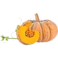
Pumpkin- Quince
- Raspberry
 Red Bell Pepper
Red Bell Pepper- Sapodilla
- Sarsaparilla
- Sea Buckthorn
- Spindle Tree
- Strawberry
- Sycamore Fig
- Tamarind
- Tangerine
- Tomato
- Tonka
- Uva Ursa
- Vanilla
- Wahoo
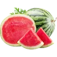
Watermelon- Wintergreen
- Yew
Grass 18
Herb 326
- Adam and Eve Roots
- Adder's Tongue
- Adonis Rose
- African Violet
- Agarwood
- Agrimony
 Ague Root
Ague Root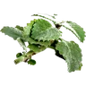
Ajowan- Alder
- Alfalfa
- Alkanet
- Althea
- Alyssum
- Amaranth
- Anemone
- Angelica
- Anise
- Arnica
- Asafoetida
- Aster
- Avens
- Baby's Breath
- Banana
- Basil
 Bay Laurel
Bay Laurel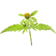
Beggar's Tick- Belladonna
- Bergamot
 Bergamot Mint
Bergamot Mint- Betony
- Bistort
- Black-eyed Susan
- Black Cohosh
- Blessed Thistle
- Bloodroot
- Bluebell
- Blue Cohosh
- Boneset
- Borage
- Buchu
 Bugleweed
Bugleweed- Burdock
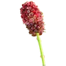
Burnet- Buttercup
- Butterfly Weed
 Calamint
Calamint- Calamus
- Calendula
- Camel Weed
- Caraway
 Cardamom
Cardamom- Carnation
- Carrot
- Catnip
- Celandine
- Celery
- Centaury
- Centella
- Chervil
- Chickweed
- Chicory
- Chives
- Chrysanthemum
- Cilantro
- Cinnamon
- Cinquefoil
- Citronella
- Cloth-of-Gold
- Clover
- Coltsfoot
- Columbine
- Comfrey
- Compass Plant
- Cornflower
- Cornmint
- Costmary
 Costus
Costus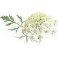
Cowbane- Cowslip
- Creeping Cinquefoil
- Cuckoo-Flower
- Cucumber
- Cumin
- Cyclamen
- Daisy
- Damiana
- Dandelion
 Darnel
Darnel- Datura
- Deerstongue
- Devil's Bit
- Dill
- Dittany of Crete
- Dock
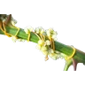
Dodder- Dogbane
- Dutchman's Breeches
- Echinacea
- Edelweiss
- Elder
- Elecampane
- Enchanter's Nightshade
 Endive
Endive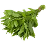
Epazote- Eryngo
- Evening Primrose
- Eyebright
- Fairy Wand
- Fennel
 Fenugreek
Fenugreek- Fern
- Feverfew
- Figwort
- Flax
- Fleabane
 Fleawort
Fleawort- Flowering Spurge
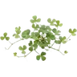
Foul-mouthed- Foxglove
- Fragrant Bedstraw
- Fumitory
- Furze
- Galangal
 Garlic
Garlic- Gentian
- Geranium
- German Chamomile
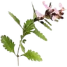
Germander- Giant Vetch
- Ginger
- Ginseng
- Gladiola
- Goat's Rue
- Goldenrod
- Goldenseal
- Grains of Paradise
- Grannybush
- Grass
- Green Tea
- Ground Ivy
- Groundsel
- Heather
- Helichrysum
- Heliotrope
- Hellebore
- Hemlock
- Hemp
- Henbane
- Hibiscus
- Holy Basil
- Honesty
- Horehound
- Horny Goat Weed
- Horseradish
- Horsetail
- Hound’s Tongue
- Houseleek
- Huckleberry
- Hyacinth
- Hyssop
- Indian Paint Brush
- Irish Moss
- Ivy
- Jack Bean
- Joe-Pye Weed
- Kava-Kava
- Kelp
- Knotweed
- Lady's Mantle
- Lady's Slipper Orchid
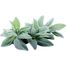
Lamb's Ear- Larkspur
- Lavender
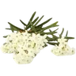
Ledum- Leek
- Lemon Balm
- Lemongrass
- Lemon Verbena
- Lettuce
- Licorice
- Life-Everlasting
- Lilac
- Lily
- Lily of the Valley
- Lime
- Linden
- Liverwort
- Lobelia
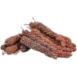
Long Pepper- Loosestrife
- Lotus
- Lovage
- Love-in-a-Mist
- Lungwort
- Lupine
- Maidenhair
- Male Fern
- Mallow
- Mandrake
- Marigold
- Marjoram
- Masterwort
- May Apple
- Mayweed
- Meadowfoam
- Meadow Rue
- Meadowsweet
- Melilotus
- Milk Thistle
- Milkweed
- Mint
- Moonwort
- Morning Glory
- Moroccan Chamomile
 Motherwort
Motherwort- Mountain Pepper
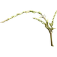
Mucura- Mugwort
- Mullein
- Musk
- Mustard
- Myrtle
- Nasturtium
- Nettle
- Nutmeg
- Oak Moss
- Okra
- Onion
- Orchid
- Oregano
- Orpine
- Orris
- Palmarosa
- Pansy
- Parosela
- Parsley
- Patchouli
- Peanuts
- Pega-Pega
- Pennyroyal
- Peony
- Peppermint
- Pepper Tree
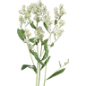
Pepperwort- Periwinkle
- Pimpernel
- Pipsissewa
- Plantain
- Poke
- Poplar
- Poppy
- Primrose
- Privet
- Purslane
- Ragweed
- Ragwort
- Rampion
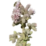
Rattlesnake Root- Reed
- Rhodiola
- Rosemary
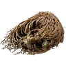
Rose of Jericho- Rue
- Saffron
- Sage
- Sagebrush
- Saint John's Wort
- Santolina
- Sarsaparilla
- Savory
- Saxifrage
- Scullcap
- Seaweed
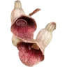
Serpentaria- Shepherd's Purse
- Silverweed
- Snake Head
- Snakeroot
- Soapwort
- Solomon’s Seal
- Southernwood
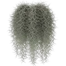
Spanish Moss- Spanish Oregano
- Spanish Sage
- Spearmint
- Spiderwort
- Spike Lavender
 Spikenard
Spikenard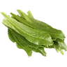
Spiritweed- Spurge
- Squill
- Star Anise
- Stillingia
- Sweet Cicely
- Sweetgrass
- Sword Bean
- Syrian Rue
- Tagetes
- Tansy
- Tarragon
- Thistle
- Thyme
- Toadflax
- Tobacco
- Trillium
- Valerian
- Vanilla
- Vervain
- Vetivert
- Violet
- Water Agrimony
 Watercress
Watercress- Water Hemlock
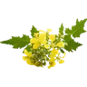
White Mustard- Wild Columbine
- Wild Ginger
- Winter Savory
 Witch Grass
Witch Grass- Wolf's Bane
- Woodruff
- Wood Sorrel
- Wormseed
- Wormwood
- Yarrow
- Yellow Flag
- Yerba Santa
Leaf 330
- Acacia
- Adder's Tongue
- African Violet
- Ague Root
- Alder
- Alfalfa
 Aloe
Aloe- Althea
- Alyssum
- Amaranth
- Anemone
- Angelica
- Antiseptic Bush
- Apple
- Ash
- Aspen
- Aster
 Ayahuasca
Ayahuasca Bamboo
Bamboo- Banana
- Banyan
- Baobab
- Basil
- Bay Laurel
 Beech
Beech Beet
Beet- Belladonna
- Bergamot
- Bergamot Mint
- Bergamot Orange
- Betony
- Bilva
- Birch
- Bistort
- Bitter Orange
- Bittersweet Nightshade
- Blackberry
- Black Cohosh
- Bleeding Heart
- Blessed Thistle
- Bloodroot
- Bluebell
- Blueberry
- Blue Flag
- Bodhi
- Boldo
- Boneset
- Borage
 Briony
Briony- Bromeliad
- Broom
- Buchu
- Burdock
- Burnet
- Buttercup
- Cabbage
- Cade
- Cajuput
- Calamus
- Calendula
- Camellia
- Camphor
 Canadian Balsam
Canadian Balsam- Caper
- Carnation
- Carrot
- Cascara Buckthorn
- Cascarilla
- Cassia
- Cassie
- Castor
- Catnip
- Cat Tail
 Cedar
Cedar- Celandine
- Celery
- Centaury
- Centella
- Chestnut
- Chives
- Cinquefoil
- Citronella
- Coca
- Coltsfoot
- Comfrey
- Cornmint
- Costmary
- Creeping Cinquefoil
- Curry
- Daisy
- Damiana
- Dandelion
- Date Palm
- Datura
- Deerstongue
- Dill
- Dittany of Crete
- Dock
- Dogbane
- Dwarf Elder
- Endive
- Eucalyptus
- Evening Primrose
- Fennel
- Fenugreek
- Fern
- Feverfew
- Fig
- Foxglove
- Fragrant Bedstraw
- Fumitory
- Garlic
- Geranium
- German Chamomile
- Goat's Rue
- Goldenrod
- Grape
- Green Tea
- Ground Ivy
- Groundsel
- Hawthorn
- Hazel
- Heather
- Helichrysum
- Heliotrope
- Hellebore
- Hemlock
- Hemp
- Henbane
- Henna
- Hibiscus
- Holly
- Hollyhock
- Holy Basil
- Honesty
- Honeysuckle
- Horehound
- Horny Goat Weed
- Horseradish
- Hound’s Tongue
- Houseleek
- Huckleberry
- Ivy
- Jaborandi
- Joe-Pye Weed
- Juniper
- Knotweed
- Lady's Mantle
- Lamb's Ear
- Larch
- Lavender
- Ledum
- Leek
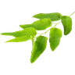
Lemon-Scented Eucalyptus- Lemon Balm
- Lemongrass
- Lemon Verbena
- Lettuce
- Life-Everlasting
- Lilac
- Lily of the Valley
- Linden
- Liverwort
- Lobelia
- Locust
- Loosestrife
- Lotus
- Lovage
- Love-in-a-Mist
- Lungwort
- Lupine
- Magnolia
- Maguey
- Maidenhair
- Male Fern
- Mallow
- Mandrake
- Marigold
- Marjoram
- Masterwort
- May Apple
- Mayflower
- Mayweed
- Meadow Rue
- Meadowsweet
- Mimosa
- Mint
- Mistletoe
- Moonwort
- Morning Glory
- Mountain Mahogany
- Mountain Pepper
- Mugwort
- Mulberry
- Mullein
- Musk
- Mustard
- Myrtle
- Nasturtium
- Neem
- Nettle
- Niaouli
- Oak
- Oleander
- Onion
- Orange
- Orchid
- Oregano
- Oregon Grape
- Palmarosa
- Pansy
- Papaya
- Parosela
- Parsley
- Passion Flower
- Patchouli
- Pea
- Pennyroyal
- Peony
- Peppermint
- Pepper Tree
- Periwinkle
- Persea
 Petitgrain
Petitgrain- Pimpernel
- Pine
- Pineapple
- Pipsissewa
- Plantain
- Plum
- Plumeria
- Poinsettia
- Poison Ivy
- Poke
- Pomegranate
- Poplar
- Potato
- Prickly Ash
- Primrose
- Purslane
- Quassia
- Radish
- Ragweed
- Ragwort
- Raspberry
- Ravensara
- Reed
- Rhubarb
- Rock Rose
- Rue
- Sage
- Sagebrush
- Saint John's Wort
- Sanicle
- Santolina
- Sarsaparilla
- Sassafras
- Savory
- Scullcap
- Sea Buckthorn
- Senna
- Shallot
- Silver Fir
- Skunk Cabbage
- Slippery Elm
 Snake Plant
Snake Plant- Snakeroot
- Solomon’s Seal
- Southernwood
- Spanish Sage
- Spearmint
- Spiderwort
- Spindle Tree
- Spruce
- Spurge
- Squill
- Stephanotis
- Stillingia
- Strawberry
- Sweetgum
- Sweet Pea
- Sycamore
- Tamarisk
- Tangerine
- Tansy
- Tarragon
- Tea Tree
- Thistle
- Thyme
- Ti
- Toadflax
- Tobacco
- Trillium
- Tuberose
- Tulip
- Turnip
- Uva Ursa
- Valerian
- Venus' Flytrap
- Vervain
- Violet
- Wahoo
- Walnut
- Watercress
- Water Lily
- Wax Plant
- West Indian Bay
- White Poplar
- Wild Ginger
- Willow
- Winter's Bark
- Wintergreen
- Winter Savory
- Witch Hazel
- Wolf's Bane
- Wood Rose
- Woodruff
- Wood Sorrel
- Wormseed
- Wormwood
- Yam
- Yarrow
- Yerba Bruja (Kalanchoe pinnata)
- Yerba Buena
- Yerba Mate
- Yerba Santa
- Yew
- Ylang Ylang
- Yohimbe
- Yucca
Moss 5
Mushroom 4
Nut 17
Resin 39
- Acacia
- Agarwood
- Apricot
- Asafoetida
- Balm of Gilead
 Benzoin
Benzoin- Borneo Camphor
- Camphor
- Canadian Balsam
 Copaiba Balsam
Copaiba Balsam- Copal
 Dammar Gum
Dammar Gum Dragon's Blood
Dragon's Blood Elemi
Elemi Frankincense
Frankincense Galbanum
Galbanum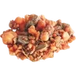
Gum Ammoniac Gum Bdellium
Gum Bdellium Gum Scammony
Gum Scammony- Karaya
- Larch
- Longleaf Pine
- Mastic
- Myrrh
- Opopanax
 Opoponax
Opoponax- Pepper Tree
 Peru Balsam
Peru Balsam- Pine
- Poplar
- Rock Rose
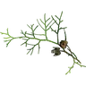
Sandarac- Silver Fir
- Spruce
- Storax
- Sweetgum
 Tolu Balsam
Tolu Balsam Tragacanth Gum
Tragacanth Gum- White Poplar
Root 109
- Adam and Eve Roots
- Agrimony
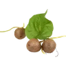
Air Potato- Alkanet
- Althea
- Angelica
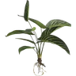
Arrowroot- Asafoetida
- Avens
- Beet
- Belladonna
- Bistort
- Black-eyed Susan
- Black Cohosh
- Bloodroot
- Blue Cohosh
- Blue Flag
- Bog Asphodel
- Briony
- Burdock
 Button Snake Root
Button Snake Root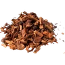
Cachana- Calamus
- Carrot
- Cat Tail
- Celery
- Chicory
- Cinquefoil
- Comfrey
- Costus
- Cowbane
- Creeping Cinquefoil
- Dahlia
 Danda Root
Danda Root- Dandelion
- Devil's Bit
- Devil's Shoestring
- Dock
- Dogbane
- Dutchman's Breeches
- Echinacea
- Elecampane
- Fairy Wand
- Galangal
- Garlic
- Gentian
- Ginger
- Ginseng
- Goldenseal
- Gum Scammony
- Hellebore
- High John the Conquerer
- Hollyhock
- Horseradish
- Jezebel Root
- Kava-Kava
- Knotweed
- Lady's Slipper Orchid
- Lamb's Ear
- Licorice
- Lotus
- Lovage
- Low John the Conqueror
- Lucky Hand
- Male Fern
- Mandrake
- Masterwort
- May Apple
- Nettle
- Onion
- Orchid
- Orris
- Parsley
- Peony
- Pipsissewa
- Poke
- Poplar
- Potato
- Radish
- Rampion
- Rhodiola
- Rhubarb
- Sarsaparilla
- Sassafras
- Shallot
- Snakeroot
- Soapwort
- Solomon’s Seal
- Spikenard
- Squill
- Stillingia
- Sugar Beet
- Sumbul
- Sweet Cicely
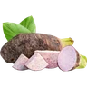
Taro- Trillium
- Turmeric
- Turnip
- Valerian
- Vetivert
- Viburnum
- Water Hemlock
- Water Lily
- Wild Ginger
- Wolf's Bane
- Wood Rose
- Yam
- Yellow Flag
- Yucca
Seaweed 5
Seed 107
 Acorn
Acorn- Ague Root
- Ajowan
- Alfalfa
- Almond
- Amaranth
- Angelica
- Anise
- Apricot
- Apricot Kernel
- Argan
- Avocado
- Barley
- Basil
 Beans
Beans- Beggar's Tick
 Betel Nut
Betel Nut- Borage
- Buckwheat
- Cacao
- Caraway
- Cardamom
- Carob
- Carrot
- Castor
- Cat Tail
- Celery
- Coca
- Coffee
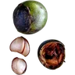
Contraveneno Corn
Corn- Cotton
- Cubeb
- Cumin
- Darnel
- Datura
- Dill
- Dock
- Evening Primrose
- Fennel
- Fenugreek
- Flax
- Fleawort
- Grains of Paradise
- Grape
- Hemlock
- Hemp
- Henbane
- Job's Tears
- Jojoba
- Kukui Nut
- Lentil
- Lettuce
- Lotus
- Lovage
- Love-in-a-Mist
- Lupine
- Macadamia
- Mace
- Mary's Seed
- Mesquite
- Millet
- Morning Glory
- Musk
- Mustard
- Neem
- Nettle
- Nutmeg
- Oats
- Ojo de Venado
- Okra
- Papaya
- Parsley
- Pea
- Peanuts
- Pepper
- Plum
- Pomegranate
- Poppy
- Potato
- Radish
- Rice
- Rosehip
- Rye
- Senna
- Sesame
- Shallot
- Spurge
- Star Anise
 Straw
Straw- Strawberry
- Sugar Cane
- Sunflower
- Sweet Cicely
- Tamarind
- Tangerine
- Tansy
- Thistle
- Tomato
- Tonka
- Turnip
- Wheat
- White Mustard
- Witch Grass
- Wormseed
- Yam
- Yarrow
Spice 41
- Alfalfa
- Allspice
- Angelica
- Anise
- Asafoetida
- Avens
- Basil
- Bay Laurel
- Caraway
- Cardamom
- Cayenne Pepper
- Cinnamon
- Clove
- Cubeb
- Cumin
- Fenugreek
- Galangal
- Garlic
- Ginger
- Grains of Paradise
- Habanero Pepper
- Long Pepper
- Lovage
- Love-in-a-Mist
- Mace
- Mountain Pepper
- Musk
- Mustard
- Nutmeg
- Oregano
- Paprika
- Parsley
- Pepper
- Saffron
- Sesame
- Star Anise
- Tarragon
- Thyme
- Tonka
- Turmeric
- Vanilla
Succulent 11
Tree 192
- Acacia
- Acorn
- Agarwood
- Alder
- Allspice
- Almond
- Althea
- Amla
- Amyris
- Apple
- Apple Blossom
- Apricot
- Apricot Kernel
 Arbor Vitae
Arbor Vitae- Arbutus
- Argan
- Ash
- Aspen
 Atlas Cedar
Atlas Cedar- Avocado
- Balché
- Balm of Gilead
- Bamboo
- Banana
- Banyan
- Baobab
- Bay Laurel
- Beech
- Benzoin
- Bergamot Orange
- Betel Nut
- Bilva
- Birch
- Bitter Orange
- Black Currant
- Blackthorn
- Bodhi
- Boldo
- Borneo Camphor
- Bottlebrush
- Brazil Nut
 Broad-Leaved Peppermint Eucalyptus
Broad-Leaved Peppermint Eucalyptus- Cacao
- Cade
- Cajuput
- Camphor
- Canadian Balsam
- Cananga
- Carob
- Cascara Buckthorn
- Cascarilla
- Cashew
- Cassia
- Cassie
- Catalpa
- Cedar
- Chaste Tree
- Cherry
- Chestnut
- Chicory
- China Berry
- Cinchona
- Cinnamon
- Citron
- Clove
- Coconut
- Copaiba Balsam
- Curry
 Cypress
Cypress- Date Palm
- Dogwood
 Douglas Fir
Douglas Fir Dracaena
Dracaena- Dragon's Blood
- Dwarf Elder
- Dwarf Pine
- Ebony
- Elder
- Elemi
- Elm
 English Walnut
English Walnut- Eucalyptus
- Fig
- Frankincense
- Ginkgo
- Grapefruit
- Guaiacwood
- Guava
- Hawthorn
- Hazel
- Hemlock Spruce
- Henna
- Hickory
- Holly
- Jojoba
- Joshua Tree
- Jujube
- Juniper
- Kukui Nut
- Larch
- Lawson's Cypress
- Lemon
- Lemon-Scented Eucalyptus
- Lime
- Linaloe
- Linden
- Locust
- Longleaf Pine
- Macadamia
- Mace
- Magnolia
- Maple
- Mastic
 May Chang
May Chang- Mayflower
- Mesquite
- Mimosa
- Mountain Mahogany
- Mulberry
- Myrrh
- Myrtle
- Neem
- Niaouli
- Norfolk Island Pine
- Nutmeg
- Oak
- Oak, Holly
- Olive
- Opopanax
- Orange
 Palo Santo
Palo Santo- Papaya
- Paulownia
- Peach
- Pear
- Pecan
- Pepper Tree
- Persea
- Persimmon
- Peru Balsam
- Petitgrain
- Pine
- Pistachio
- Plum
- Plumeria
- Pomegranate
- Poplar
- Prickly Ash
- Privet
- Quassia
- Quince
- Ravensara
- Red Sandalwood
- Rosewood
- Rowan
- Sandalwood
- Sandarac
- Sassafras
- Sea Buckthorn
- Sequoia
- Silver Fir
- Sitka Spruce
- Slippery Elm
- Southernwood
- Spindle Tree
- Spruce
- Star Anise
- Storax
- Sweet Birch
- Sweet Chestnut
- Sweetgum
- Sycamore
- Sycamore Fig
- Tamarind
- Tamarisk
- Tangerine
- Tea Tree
- Terebinth
 Texas Cedarwood
Texas Cedarwood- Tolu Balsam
- Tonka
 Virginian Cedar
Virginian Cedar- Walnut
- Western Hemlock
- Western Red Cedar
- West Indian Bay
- White Poplar
- Willow
- Winter's Bark
- Yew
- Ylang Ylang
- Yohimbe
Vegetable 48
- Amaranth
- Artichoke
- Asparagus
- Avocado
- Bamboo
- Beans
- Beet
- Black-Eyed Peas
- Cabbage
- Cactus
- Carrot
- Cayenne Pepper
- Celery
- Chili Pepper
- Corn
- Cucumber
- Eggplant
- Endive
- Fennel
- Fenugreek
- Galangal
- Garlic
- Ginger
- Gourd
- Horseradish
- Leek
- Lentil
- Lettuce
- Mustard
- Onion
- Paprika
- Parsley
- Pea
- Pepper
- Potato
- Pumpkin
- Purslane
- Radish
- Rampion
- Red Bell Pepper
- Rhubarb
- Shallot
- Skunk Cabbage
- Sugar Beet
- Taro
- Tomato
- Turnip
- Yam
Vine 33
- Air Potato
- Ajos Sacha
- Ayahuasca
- Bittersweet Nightshade
- Briony
- Contraveneno
- Cranberry
- Dodder
- Grape
- Ground Ivy
- Honeysuckle
- Hops
- Ivy
- Jack Bean
- Jasmine
- Moonflower
- Morning Glory
- Ojo de Venado
- Passion Flower
- Pea
- Pepper
- Poison Ivy
- Pothos
- Sarsaparilla
- Stephanotis
- Sweet Pea
- Sword Bean
- Tahiti Vanilla
- Tomato
- Vanilla
- Wax Plant
- Wisteria
- Wood Rose
No Type 65
- Algae
- Angel's Trumpet
- Angel Wings
- Annatto
- Ash Weed
- Auricula
- Bonduc
- Breast Weed
- Bulbous Buttercup
- Ceiba
- Cherry Plum
- Coco de Mer
- Cowage Plant
- Cranesbill
- Devil's Claw
- Diviner's Sage
- Dog Grass
 Emmer Wheat
Emmer Wheat- Eye of the Devil
- False Hellebore
- Field Clover
- Fringe Tree
- Fungus on Elder
- Ghost Chili
- Hart's Tongue
- Honey Locust
- Huayruru
- Indigo
- Iris
- Iroko
 Java Citronella
Java Citronella- Lichen
- Ling Nut
- Lion's Ear
- Mango
- Marsh Marigold
- Medicago Intertexta
- Moly
- Moringa
- Mouse Blood Wort
- Nephalium Loganum
- Parsnip
- Pearlwort
- Ribwort Plantain
- Rosalina
 Safflower
Safflower- Sampson Snake Root
- Sauroglossum
- Scouring Rush
- Sea Spirit
- Sedge
- Skullcap
- Snail Plant
- Snake's Head Fritillary
- Spirulina
- Star Scabious
- Stinking Hellebore
- Sweet Annie
- Tanni Tree
- Vegetable Ivory
- Vegetable Oyster
- Wartwort
- West Indian Elm
- Xanthorrhoea Arbores
- Yellow Rattle